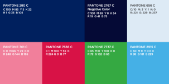

서민금융진흥원의 상징(CI)은서민의 ㅅ을 사람(人)으로, ㅁ을 열린 창의 빛으로 재해석하여, 서민의 원스톱 금융파트너로서의 역할을 표현하며, 서민금융진흥원을 통해 개개인에게 가장 적합한 맞춤형 금융 서비스를 제공받고, 보다 밝고, 투명한 미래로 나아가는 , 긍정적이면서도 능동적인 이미지를 형상화하고 있다.
서민금융진흥원의 색채는레드(활력), 핑크(행복), 그린(안정), 블루 (희망), 네이비(신뢰) 등 다채로운 색상과 삼각형(화살표), 사각형(동서남북), 사선 (상승/확산) 등의 다양한 도형 조각들이 한 데 모여, 하나의 심벌을 구성함으로써 폭넓은 지원 안내와 다양한 금융 혜택을통해, 서민과 함께하는 지속가능한 금융솔루션을 제공함을 의미한다.
서민금융진흥원의 한글로고는금융소외자의 과도한 채무 부담을 줄여 경제적 회생의 기회를 제공하기 위해 2013년 3월 29일 출범하였습니다.
대부업, 불법사금융 등에서 고금리 대출 이용이 불가피한 최저신용자를 위해 국민행복기금 보증 정책서민금융상품 ‘햇살론15’을 지원합니다.